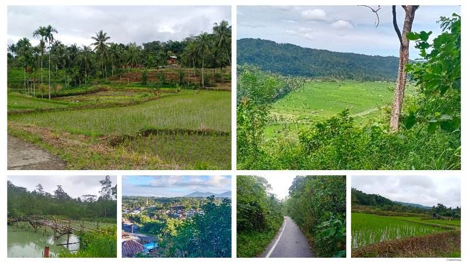
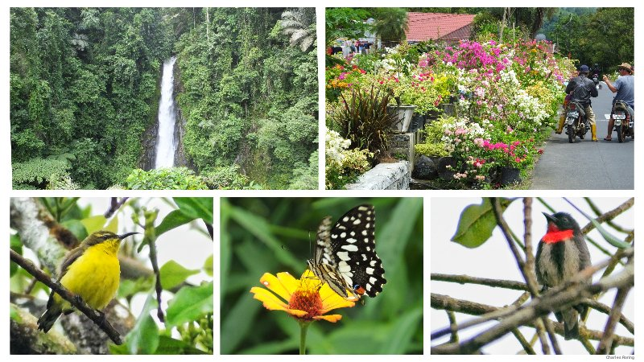

Introduction
Minahasa highland has been famous as agricultural land in Indonesia supplying rice, corn, green bean, kidney bean, peanut, banana, cabbage, carrot, spring onion, tomato, aubergine, rambutan, durian, papaya, eggs, pork, fish, palm sugar and other agricultural produce to Manado city as well as towns and cities in eastern region of Indonesia.
This tour will allow participants to visit the farmland areas of Minahasa to see the crop plants that local people grow, interact with farmers, the produce that are available in traditional market. We could buy some of their fresh produce and try cooking them based on local menu.

The following itinerary should be considered as reference only. It can be customized according to the needs and the available time that the participants have.
Day 1
We will meet you at Sam Ratulangi International Airport of Manado city or a hotel in Manado city. After that, we will organize your transfer by car to Tomohon town. Check into hotel. You could take a rest for around 2 hours. Lunch. We will start our trip by car to the slope of Mount Mahawu where we will see food crops such as cabbage, mustard green, spring onion, tomatoes and other agricultural commodities which the farmers grow. After that, we will continue our trip to the top of Mount Mahawu to see its beautiful landscape.

Back to Tomohon, we will visit local market and buy some agricultural produce that we need to practice cooking some of the traditional Minahasan cuisines such as fried tilapia fish with tomatoes, chilli, and onion sauce. Dinner. Rest.
Day 2
09:00 We will stop at the traditional market to see what local people buy and sell in their daily life. We can buy some of the agricultural produce that can be cooked for our lunch.
We will start our trip by taking a morning walk along the agricultural land of Sonder, walking through paddy fields and then continue to vegetable gardens where farmers grow food crops such as corn, chilli, aubergine, tomatoes and etc.
We can also visit gardens that the farmers use for planting agricultural commodities such as vanilla and clove.
We can buy some of the agricultural produce directly from the farmers that we can use to practice cooking some of the local menu such as tinutuan, and vegetable soup. Lunch. Rest a little. We will do sightseeing trip to waterfall in Tincep village.

Day 3
After taking breakfast, we will start our tour to Lake Tondano. There, we will see the scenery of the lake and then visit Benteng Moraya (meaning Moraya Fortress) that was used by local people in wars against any invading tribes and colonial powers. We will continue our explorations of Minahasa highland to Pulutan village where we will be able to see local villagers who make earthenware products. Tour participants can buy any products as souvenirs for them. We will return Tondano for lunch and then back to Tomohon.
Day 4
As usual, we will start our tour after breakfast. We will visit District Kawangkoan where local villagers grow peanuts, brenebon bean (from Dutch: bruine bonen meaning brown bean), green bean. We can buy some of the bean produce to practice cooking brenabon soup. Lunch in Kawangkoan. Along the roadside, local shops sell various kinds of snacks which could be bought as souvenirs by tour participants. We will continue to District Langowan where we can see vast expanse of agricultural land. Back to Tomohon. Dinner and take a rest.
We will check out of the hotel and then go to Sam Ratulangi airport of Manado city. We will say Good Bye to you where you could continue your trip to other parts of Indonesia or return to your country.


If you are interested in traveling to Indonesia and taking this farnland tour in Minahasa highland, and need a guide to organize your trip and guide you, please, contact me (Charles Roring) by whatsapp to: +6281332245180 or by email to: peace4wp@gmail.com.